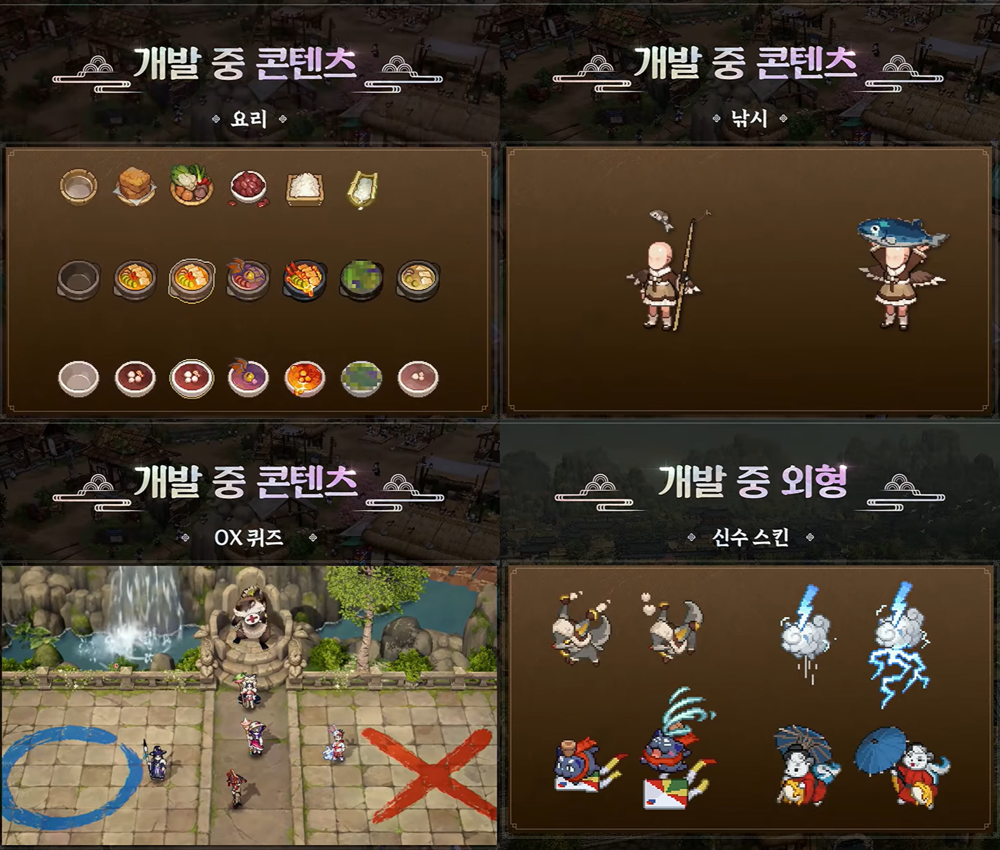
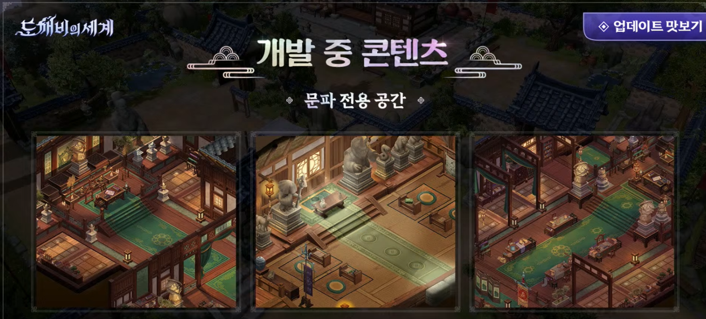
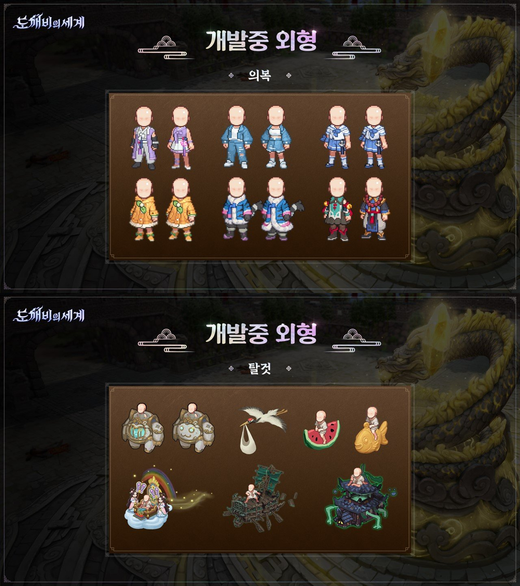

도깨비의세계 출시에 없는 콘텐츠 정리, 낚시 채집 결혼은 언제 오나
도깨비의세계 정식 출시가 10월 8일 목요일 11시, 이제 정말 코앞으로 다가왔는데요(오늘이 9월 30일이니 딱 D-8이에요). 그동안 사전예약 출시일이랑 도술 스타일 조합, 캐릭터명 경매장까지 이것저것 짚어드렸는데, 정작 라이브 시연회 공식 Q&A 공지를 다시 뒤적이다 보니 의외로 눈에 밟히는 대목이 있더라고요.
바로 결혼·낚시·채집처럼 '있을 법한데 없는' 콘텐츠 얘기였어요. 공식이 직접 "출시 버전엔 포함 안 된다"고 못 박은 항목들이 꽤 되길래, 출시 전에 미리 정리해두면 기대치 조절하는 데 도움이 되겠다 싶었어요. 오늘은 있는 것 말고 지금은 없는 것부터 짚어볼게요.
전통 혼례 장소는 있다는데, 결혼 콘텐츠는요?
전통 혼례를 치를 장소 자체는 출시 시점부터 마련돼 있지만, 유저끼리 실제로 결혼을 진행하는 콘텐츠는 출시 버전에 들어가지 않아요.
공식 답변을 그대로 옮겨보면 "전통 혼례 장소가 마련되어 있으며, 실제 결혼 콘텐츠는 빠른 시일 내 추가할 예정입니다"라고 돼 있는데요. 그러니까 혼례를 올릴 수 있는 공간(장소)은 있지만, 프러포즈나 예식 같은 실제 결혼 시스템은 아직 없다는 뜻이에요. 장소랑 콘텐츠를 헷갈리면 안 되는 부분이라 짚고 넘어갈게요.
확인 위치: 카카오게임즈 공식 포럼 공지(공지 1132에는 "빠른 시일 내"라고만 표기, 구체적인 날짜는 아직 안 나왔어요)
낚시·채집·요리 생활 콘텐츠는 언제 와요?
낚시·채집·요리, 이 세 가지 생활 콘텐츠는 전부 출시 버전에 포함되지 않고, 후속 업데이트로 준비 중이에요.
- 낚시 — 정식 출시 때는 즐길 수 없고, 이후 업데이트에서 추가돼요
- 채집 — 마찬가지로 출시 버전엔 빠져 있고, 후속 업데이트에 포함될 예정이에요
- 요리 — 역시 출시 시점엔 없고, 뒤이은 업데이트로 준비되고 있어요
공식 표현을 그대로 빌리면 "낚시·채집·요리 등 생활 콘텐츠는 출시 버전에는 포함되지 않으며, 후속 업데이트로 최대한 빠르게 준비하겠습니다"라고 했는데요. 여기서 재밌는 건 결혼이랑 표현이 다르다는 점이에요. 결혼은 '빠른 시일 내', 생활 콘텐츠는 '후속 업데이트로 최대한 빠르게'라고 각각 다르게 썼거든요. 같은 '나중에 온다'는 말이어도 공식이 굳이 표현을 갈라 쓴 거 보면, 두 콘텐츠의 준비 단계가 조금 다를 수도 있겠다는 인상을 받았어요.

공식이 '개발 중 콘텐츠'라고 캡션을 단 이미지예요. 요리·낚시·OX퀴즈·신수 스킨이 한 화면에 나란히 있어요.
이미지 출처: forum.kakaogames.com/dokkaebi (공식 커뮤니티 공지 1132)
확인 위치: 카카오게임즈 공식 포럼 공지(공지 1132에는 "후속 업데이트로 최대한 빠르게"라고만 표기, 구체적인 일정은 아직 안 나왔어요)
이 밖에도 아직 없는 것들, 짧게 정리하면
결혼·낚시·채집·요리 말고도 출시 버전엔 아직 안 들어간 콘텐츠가 몇 가지 더 있어요.
- 문파 전용 공간(하우징 포함, 게임메카 취재 기준) — 출시 버전엔 없고, 출시 후 추가 예정
- 전래동화 두 번째·세 번째 이야기(의좋은 형제, 흥부와 놀부) — 첫 이야기 '콩쥐팥쥐'만 출시 버전에 있고, 나머지는 추후 준비 중
- 도술 초기화 기능 — 현재는 제공되지 않음(추가 계획 언급도 없음)
- 무기 염색 — 현재는 헤어·의복 염색만 가능, 무기 염색은 빠르게 추가 예정
- 다른 서버 친구를 지정해서 함께 레이드하는 기능 — 매칭으로 만나는 건 가능하지만, 특정 친구를 콕 집어 초대하는 건 아직 미지원(검토 중)

문파 전용 공간도 아직 '개발 중'이라고 공식이 직접 밝힌 이미지예요(하우징까지 포함된다는 건 게임메카 취재 기준이에요).
이미지 출처: forum.kakaogames.com/dokkaebi (공식 커뮤니티 공지 1132)
이 중에서 결이 다른 하나는 도술 초기화예요. 나머지는 '지금은 없지만 온다'는 쪽인데, 도술 초기화는 공식이 "제공되고 있지 않습니다"라고만 답했고 추가 계획 자체를 언급하지 않았거든요. 그래서 처음 도술 스타일을 고를 땐 신중하게 확정 짓는 편이 낫습니다. 참고로 다른 서버 친구를 콕 집어 레이드에 부르는 기능도 아직은 없는데요, 매칭을 통해 낯선 도사와 만나는 건 되지만 친구 지정 초대는 "검토 중"이라는 답만 나온 상태라 이것도 시점은 미정이에요.
여기까지 나온 '없는 것'들을 한눈에 정리하면 이래요.
| 항목 | 출시 버전 | 추가 시점(공식 문구) |
|---|---|---|
| 결혼 콘텐츠 | 장소만 있음(콘텐츠 X) | 빠른 시일 내 |
| 낚시 | 미포함 | 후속 업데이트로 최대한 빠르게 |
| 채집 | 미포함 | 후속 업데이트로 최대한 빠르게 |
| 요리 | 미포함 | 후속 업데이트로 최대한 빠르게 |
| 문파 전용 공간(하우징, 게임메카 취재) | 미포함 | 출시 후 추가 예정 |
| 전래동화 후속편(의좋은 형제·흥부와 놀부) | 미포함(콩쥐팥쥐만 있음) | 추후 준비 중 |
| 도술 초기화 | 제공 안 함 | 추가 계획 언급 없음 |
| 무기 염색 | 현재: 헤어·의복만 가능(무기는 추후 추가 예정) | 빠르게 추가 예정 |
| 다른 서버 친구 초대 레이드 | 미지원(매칭 참여만 가능) | 검토 중(시점 미정) |
표로 쭉 훑어봤으니, 이번엔 무기 염색이랑 연결되는 외형 쪽 이미지도 마저 확인해볼게요.

무기 염색처럼 외형 관련 콘텐츠도 이렇게 '개발 중'으로 따로 소개돼 있어요.
이미지 출처: forum.kakaogames.com/dokkaebi (공식 커뮤니티 공지 1132)
이렇게 없는 콘텐츠를 쭉 짚어봤는데요, 이제 궁금해하실 만한 부분들을 질문으로 정리해볼게요.
자주 묻는 질문
Q. 도깨비의세계 결혼 콘텐츠 언제 추가되나요?
정확한 날짜는 아직 공식 발표가 없어요. 카카오게임즈가 라이브 시연회 공식 Q&A(포럼 공지 1132)에서 "빠른 시일 내 추가할 예정"이라고만 밝혀서, 구체적인 일정은 출시 이후 공지를 기다려야 해요. 이런 생활형 콘텐츠는 출시 초반 유저 요청 게시글이 많이 쌓일수록 일정이 당겨지는 경우가 종종 있으니, 기다리시는 분이라면 공식 포럼 공지 게시판을 즐겨찾기 해두시는 게 가장 빠른 확인 방법이에요.
Q. 출시하자마자 전통 혼례 장소는 갈 수 있나요?
네, 전통 혼례를 치를 장소 자체는 출시 시점부터 맵에 마련돼 있어요. 다만 그 장소에서 실제로 진행하는 결혼 시스템은 아직 없고, 이 부분만 별도로 나중에 추가되는 구조예요. 결혼 시스템이 오기 전까지는 사진 찍기 좋은 포토존 삼아 먼저 들러보는 것도 나쁘지 않을 것 같아요.
Q. 결혼이랑 낚시·채집·요리, 어느 쪽이 먼저 올까요?
공식이 쓴 표현이 서로 다르긴 해요. 결혼은 "빠른 시일 내", 낚시·채집·요리는 "후속 업데이트로 최대한 빠르게"라고 구분해서 썼거든요. 그런데 이 표현 차이가 실제 순서를 보장하는 건 아니에요. 둘 다 구체적인 날짜나 우선순위를 못 박은 건 마찬가지라서, 어느 쪽이 먼저 올지는 정식 발표가 나오기 전까진 단정하기 어렵습니다.
Q. 도술 초기화도 나중에 낚시처럼 추가되나요?
아니요, 성격 자체가 달라요. 낚시·채집·요리 쪽 질문엔 '후속 업데이트로 온다'는 답이 붙었지만, 도술 초기화 질문엔 그런 기약 없이 "제공되고 있지 않습니다"로 답이 끝났거든요. 다른 MMORPG를 보면 이런 초기화 기능이 유저 요청이 꾸준히 쌓이면서 나중에 풀리는 사례가 종종 있긴 한데, 지금 시점에 도깨비의세계 쪽에서 그런 계획을 밝힌 적은 없으니 처음 도술 스타일을 고를 땐 나중에 바꾼다는 보장 없이 신중하게 결정하시는 편이 안전해요.
Q. 전래동화는 콩쥐팥쥐 하나만 있나요?
출시 버전에는 첫 번째 이야기인 콩쥐팥쥐만 들어가 있어요. 두 번째 의좋은 형제, 세 번째 흥부와 놀부는 추후 준비 중이라고 공식이 밝혔으니 순차적으로 열릴 걸로 보여요. 동화 콘텐츠가 스토리 퀘스트로 이어지는 구조라, 다음 이야기를 기다리는 동안은 첫 이야기 안의 보상부터 꼼꼼히 챙겨두시는 게 좋을 것 같아요.
도깨비의세계 출시 전 없는 콘텐츠 정리해볼게요
여기까지 훑어보니 출시 버전에 없는 게 생각보다 많죠? 그렇다고 추가 계획 자체가 안 나온 건 도술 초기화 정도고, 나머지(결혼·낚시·채집·요리·문파 전용 공간·전래동화 후속편·무기 염색)는 전부 온다고 공식이 밝힌 거라 너무 실망하지 않으셔도 돼요. 저도 10월 8일 접속하면 우선 있는 콘텐츠부터 쭉 즐기면서, 결혼이랑 낚시 업데이트 소식은 따로 챙겨볼 계획이에요. 다들 출시일 기대하면서 기다려보세요!
✔ 도깨비의세계 같이 보기 좋은 내용
· 도깨비의세계 직업 없다? 도술 스타일 12가지 4계열로 조합하는 법, 신식 개방 조건까지
· 도깨비의세계 캐릭터명선점 놓쳤다면, 캐릭터명경매장에서 되찾을 수 있을까
· 도깨비의세계 사전예약 MMORPG신작 라이브시연회 총정리, 캐릭터명 선점 이벤트까지
참고한 곳
· 카카오게임즈 도깨비의세계 공식 커뮤니티 — 공지 1132(라이브 시연회 Q&A 종합)
· 게임메카 — 도깨비의세계 라이브 시연회 취재기사